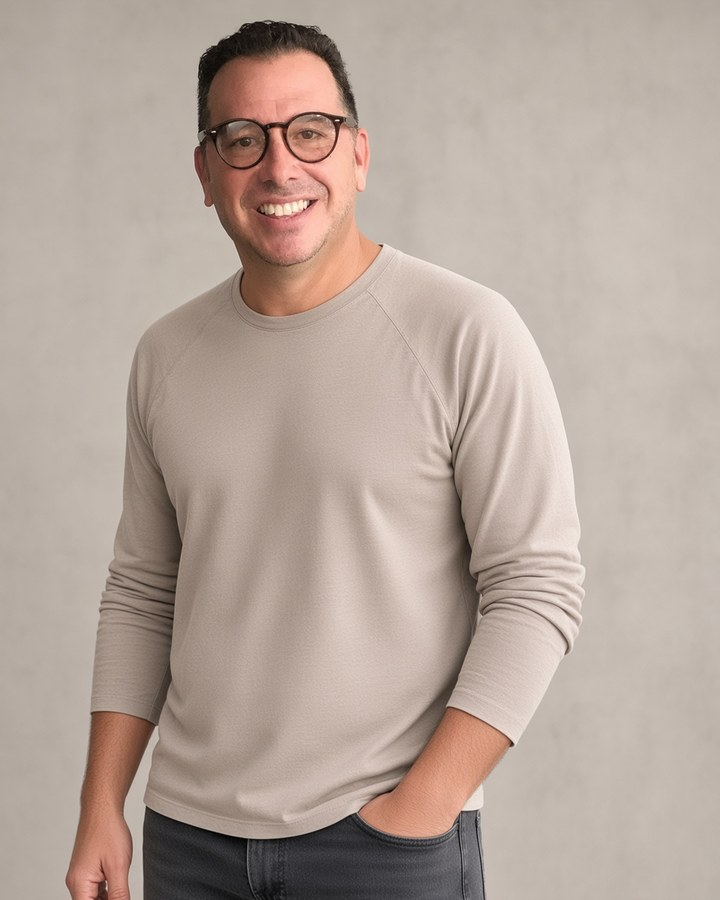
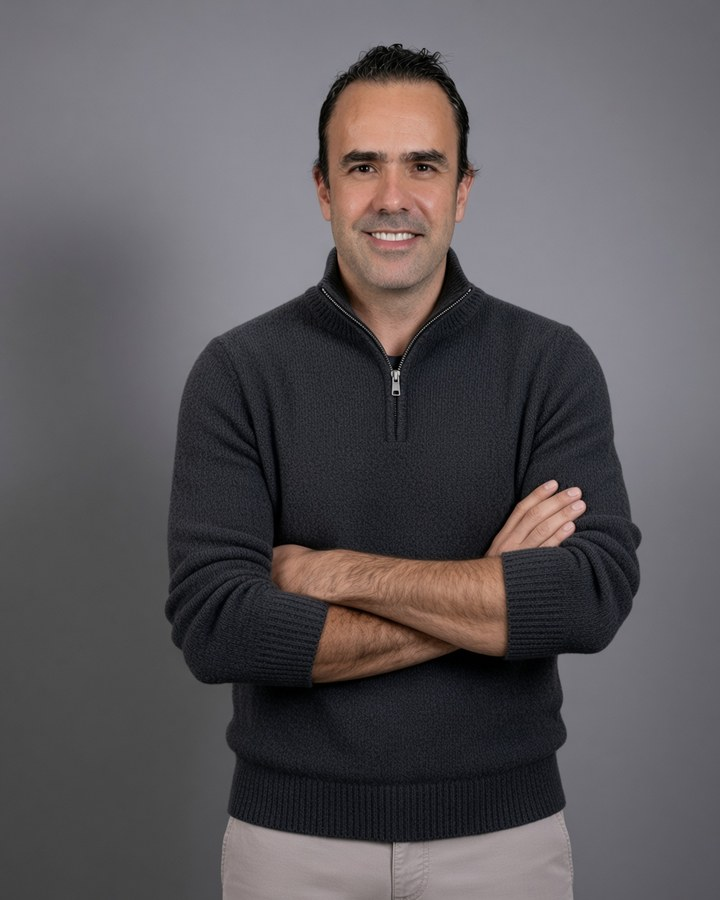

Rafael Aguirre
Fundador y Director General
Con presencia en Veracruz y Querétaro, y alcance nacional.
Somos una agencia de publicidad y comunicación 360° con 25 años de experiencia y presencia en Veracruz y Querétaro, impulsada por un equipo multidisciplinario de especialistas en marketing digital, comunicación, diseño, relaciones públicas y tecnología aplicada. Evolucionamos de forma constante mediante la adopción de nuevas herramientas y metodologías —incluida la inteligencia artificial— para desarrollar soluciones integrales, creativas, eficientes y medibles, enfocadas en fortalecer marcas, conectar con audiencias y cumplir los objetivos de negocio de nuestros clientes en México y Estados Unidos.
Nacimos en un entorno de marketing tradicional, donde la estrategia, la creatividad y los medios convencionales eran el punto de partida.
Evolucionamos hacia la gestión de comunidades digitales y campañas de paid media, adaptándonos al ritmo de la tecnología y las nuevas audiencias.
Integramos agentes conversacionales con inteligencia artificial, automatización de procesos y análisis de datos en tiempo real para optimizar cada estrategia.
Hoy diseñamos estrategias integrales de marketing digital, relaciones públicas, producción audiovisual, branding y planificación de medios, combinando experiencia, creatividad, tecnología y datos en constante evolución.
¿Listo para que logremos juntos tus objetivos?
ContáctanosSomos una agencia con raíces en Veracruz y Querétaro, dos de los mercados más dinámicos de México. Desde nuestras oficinas en ambas ciudades operamos proyectos para clientes locales, nacionales e internacionales, con profundo conocimiento del mercado mexicano y experiencia atendiendo clientes en Estados Unidos.

Fundador y Director General

Director Querétaro